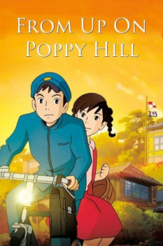

Also known as:コクリコ坂から (original title)
Country:Japan, 91 minutes
Spoken languages:Japanese
Genres:Animation, Drama
Director(s):Goro Miyazaki
Writer(s):Hayao Miyazaki, Keiko Niwa
Video Codec:Unknown
Number: 2738


Certification:PG
Storyline:
Two high schoolers find hope as they fight to save an old wartime era clubhouse from destruction during the preparations for the 1964 Tokyo Olympics.
Cast:

Medium: Original DVD,
Comments: Part of Studio Ghibli Special Edition Collection
Loaned: No
Aspect ratio: Unknown